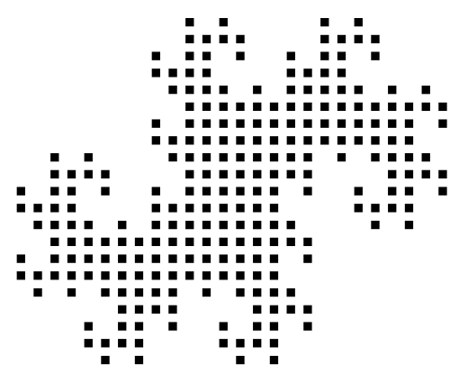

7. luokkalaisten alueellinen matematiikkakilpailu
Tulokset 2025
- Oulu
- alkukilpailu 10.-14.3.2025
- loppukilpailu 26.4.2025
- Turku (7.-luokkalaiset)
- alkukilpailu 31.3.-15.4.2025
- loppukilpailu 17.5.2025
- Turku (8.-luokkalaiset)
- alkukilpailu 31.3.-15.4.2025
- loppukilpailu 17.5.2025
Tulokset 2024
- Oulu
- alkukilpailu 11.-15.3.2024
- loppukilpailu 13.4.2024
- Satakunta
- alkukilpailu 4.-8.3.2024
- loppukilpailu 13.5.2024
Tulokset 2023
- Oulu
- alkukilpailu 27.2.-3.3.2023
- loppukilpailu 1.4.2023
- Satakunta
- alkukilpailu 6.-10.3.2023
- loppukilpailu 15.5.2023
- Turku
- alkukilpailu 26.3.-6.4.2023
- loppukilpailu 27.5.2023
Tulokset 2022
- Helsinki
-
- 7.-luokkalaisten loppukilpailu 11.5.2022
- 8.-luokkalaisten loppukilpailu 11.5.2022
- Oulu
- alkukilpailu 28.2.-4.3.2022
- loppukilpailu 9.4.2022
- Satakunta
- alkukilpailu 7.-11.3.2022
- loppukilpailu 12.5.2022
- Turku
- alkukilpailu 7.-18.3.2022
- loppukilpailu 14.5.2022
Tulokset 2021
- Oulu
- alkukilpailu 22.-26.2.2021
- loppukilpailu 17.4.2021
- Satakunta
- alkukilpailu 12.-16.4.2021
- loppukilpailu 24.5.2021
Tulokset 2020
- Helsinki
-
- alkukilpailu 2.-6.3.2020
- Oulu
- alkukilpailu 17.-21.2.2020
- loppukilpailu 24.10.2020
- Satakunta
- alkukilpailu 2.-6.3.2020
- Turku
- alkukilpailu 2.-6.3.2020
- loppukilpailu 25.4.2020
Tulokset 2019
- Helsinki
- alkukilpailu 4.-8.3.2019
- loppukilpailu 24.4.2019
- Oulu
- alkukilpailu 18.-22.2.2019
- loppukilpailu 6.4.2019
- Satakunta
- alkukilpailu 4.-8.3.2019
- loppukilpailu 25.4.2019
- Turku
- alkukilpailu 4.-8.3.2019
- loppukilpailu 27.4.2019
Tulokset 2018
- Helsinki
- alkukilpailu 5.-9.3.2018
- loppukilpailu 26.4.2018
- Oulu
- alkukilpailu 19.-23.2.2018
- loppukilpailu 21.4.2018
- Satakunta
- alkukilpailu 5.-9.3.2018
- loppukilpailu 25.4.2018
- Turku
- alkukilpailu 5.-9.3.2018
- loppukilpailu 21.4.2018